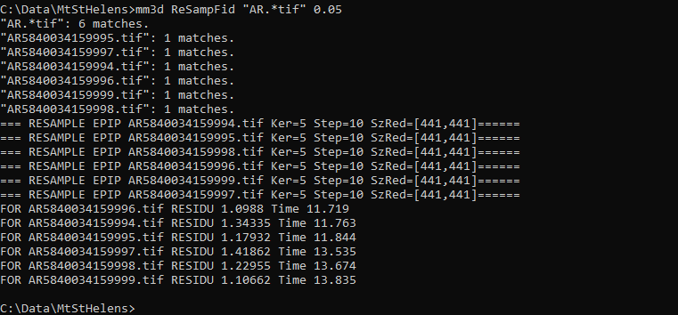

dem processing using micmac#
Note
Be sure to download all the data from the Practical 1 area on Blackboard before starting, or from the
google drive link,
then extract the .zip file.
You should have the following files/folders available in the extracted .zip file:
├─ AR5840034159994.tif
├─ AR5840034159995.tif
├─ AR5840034159996.tif
├─ AR5840034159997.tif
├─ AR5840034159998.tif
├─ AR5840034159999.tif
├─ filtre.tif
├─ id_fiducial.txt
├─ id_gcps.txt
├─ GCPs.txt
├─ MicMac-LocalChantierDescripteur.xml
├─ NAIP_Images/
└─ Ori-InterneScan/
└─ MeasuresCamera.xml
In this practical, we’re going to work on processing a digital elevation model (DEM) and orthophotos using a collection of aerial photos acquired 18 September 1984 over Mt St Helens, a volcano in Washington state, USA.
During the 1980s and early 1990s, the volcano erupted several times, including an eruption in May 1980 that collapsed the entire north face of the mountain.
Note
The instructions/images below assume that you are using MicMac in a Windows environment; the commands will be the same for a MacOS/Linux environment, but you’ll need to open a terminal rather than the Windows command prompt.
getting started#
To get started, open the Windows command prompt, either by using the search bar, or Start > Windows System > Command Prompt.
To change folders from the command line, you will use the cd command. When you open the command prompt, you should
be in your home folder (for me, this is C:\Users\bob).
At the command prompt, navigate to the folder where you have saved the data above (for me, this is
C:\Data\MtStHelens) by typing cd followed by the directory name
(note the space between the command and the directory):
C:\Users\bob>cd "C:\Data\MtStHelens\"
Note
In the line above, C:\Users\bob is the current directory, and > is the command prompt - if you want to
copy/paste the above command, be sure to copy the text after the > (i.e., cd C:\Data\MtStHelens).
For the remaining commands, I will omit the command prompt and only write the command that you will need to use.
Note
If you have saved your data to another drive (e.g., D:), you will first need to change to the correct drive,
before you try to change directories. So, if your data are saved to D:\EGM702\Data, you will need to first
change drives by entering just the drive name followed by a colon:
> D:
> cd EGM702\Data
in order to change to the correct directory. Note that you’ll need to do this each time you open the command
prompt - the default starting disk is C:.
To see the contents of the directory, use the dir command. You should see something similar to the picture below:

We’re going to run each of the processing steps in MicMac using the command line interface. If you are curious
about what a particular command or input parameter does, you can always type -help after the command, and
information about how to use the command will be printed to the screen.
For example, for the first command we will use, you can type the following at the command prompt:
mm3d SaisieAppuisInitQt -help
This will open the following window:

Note
In a MacOS/linux environment, the help message may just display to the terminal window, rather than opening a popup window.
The help text shows you the arguments that you have to use to run the command, as well as optional named arguments and
their meanings. For other commands, such as Malt, the text will print directly to the command window.
resampling the images#
The first thing we have to do is make sure the images are re-sampled to a consistent geometry. To do this in MicMac,
we use the SaisieAppuisInitQT command.
We’ll start with the first image, AR5840034159994.tif. To begin, type the following (or copy & paste) at the command prompt (note the lack of space in MeasuresIm-AR5840034159994.tif.xml). You may also have to re-type the quotation marks, as the command prompt may not recognize them:
mm3d SaisieAppuisInitQT "AR5840034159994.tif" NONE id_fiducial.txt MeasuresIm-AR5840034159994.tif.xml
This will open the window shown below:

You’ll need to set the locations of each of the fiducial marks in the image (there are 8 in total). They are
numbered as you can see in the image above, with P1 located in the lower left corner of the image.
You can pan around the viewer by pressing the center wheel on your mouse, or zoom in/out using the scroll wheel on your mouse.
Zoom in on the P1 mark, then click on P1 in the table on the right side of the frame, and finally click on the dot in the center of the fiducial mark:

You want to get as close to the middle of the dot as possible. Once you have done this for P1, repeat this
process for each of the other markers, P2 through P8.
You might notice that this isn’t easy for P6, which is partly obscured - just do the best that you can. When you have finished inputting all of the points, select File > Exit to close the window and save the point locations to a file.
To input the points for the next image (AR5840034159995.tif), you’ll need to change both the input filename and the output filename in the command:
mm3d SaisieAppuisInitQT "AR5840034159995.tif" NONE id_fiducial.txt MeasuresIm-AR5840034159995.tif.xml
Once you have finished the process for AR5840034159995.tif, repeat this for the remaining images in the directory.
When you have finished, use the dir command (or open the folder in Windows Explorer).
You should notice that MicMac has created two MeasuresIm files for each image:
one with an extension -S2D.xml,
one with an extension -S3D.xml.
You’ll need to move each of the S2D.xml files:
MeasuresIm-AR5840034159994.tif-S2D.xml
MeasuresIm-AR5840034159995.tif-S2D.xml
MeasuresIm-AR5840034159996.tif-S2D.xml
MeasuresIm-AR5840034159997.tif-S2D.xml
MeasuresIm-AR5840034159998.tif-S2D.xml
MeasuresIm-AR5840034159999.tif-S2D.xml
into the Ori-InterneScan directory, being sure to remove the -S2D from each name. The contents of Ori-InterneScan/ should now look like this:

At this point, you can delete the S3D files – the program creates them, but we don’t actually need them.
The next step is to re-sample the images using the fiducial marks you have identified, so that each image has the same geometry:
mm3d ReSampFid "AR.*tif" 0.05
This will re-sample each of the images to a resolution of 50 microns (i.e., 1 pixel = 0.05 mm). If you’re worried about space on your disk, you can re-sample to 100 microns if need be (change 0.05 to 0.1 in the command above).
Note that this will lower the final resolution of your DEM and orthophoto, though, from about 4 meters to 8 meters.
If the command runs correctly, you should see the names of each image printed out, along with the residuals (in # of pixels) and the amount of time it took to re-sample each image:
{kind=link}
As long as the residuals are small (<2 pixels or so), you can continue. If not, you’ll need to adjust your fiducial
mark selection, and run ReSampFid again.
When you have successfully re-sampled the images, create a new directory called OrigImg and move the original image files into it:
mkdir OrigImg
move AR*.tif OrigImg
Note that the wildcard, or asterisk (*), symbol tells the computer to move anything that matches the pattern
AR(something).tif into the directory OrigImg – so it should move all of the scanned images.
Note
When running ReSampFid, you might get an error message like this:
##### Name-TAG = MesureAppuiFlottant1Im Nb= 2
------------------------------------------------------------
| Sorry, the following FATAL ERROR happened
|
| cElXMLTree::GetUnique
|
--------------------------------------------------------
This indicates that you have defined the image points for an image in more than one file, and it most often happens
when you accidentally re-use the output filename for multiple SaisieAppuisInitQT commands, e.g.:
mm3d SaisieAppuisInitQT "AR5840034159994.tif" NONE id_fiducial.txt MeasuresIm-AR5840034159994.tif.xml
mm3d SaisieAppuisInitQT "AR5840034159995.tif" NONE id_fiducial.txt MeasuresIm-AR5840034159994.tif.xml
To fix this, you’ll need to go through each MeasuresIm file and ensure that there is only one set of <NameIm>
tags, and that the image named within the tag matches the MeasuresIm filename. For example, check that you only have
<NamePt>AR5840034159994.tif</NamePt>in MeasuresIm-AR5840034159994.tif.xml,<NamePt>AR5840034159995.tif</NamePt>in MeasuresIm-AR5840034159995.tif.xml,
and so on.
computing the relative orientation#
The next step is to find tie points to help compute the relative orientation of the images. To do this, we use the
Tapioca command:
mm3d Tapioca MulScale "OIS.*tif" 400 1200
This will compute tie points at two resolutions:
first, images that are approximately 400x400 pixels
second, images that are approximately 1200x1200 pixels
This helps to speed up the matching, because MicMac will only do the higher-resolution matching for images that have matches at the lower resolution.
Once this completes, you can filter the tie points, to make sure that they don’t include things like the fiducial marks or any writing on the image frame:
mm3d HomolFilterMasq "OIS.*tif" GlobalMasq=filtre.tif
If the provided filtre.tif file doesn’t work, click the link to watch this video to see how to make your own.
After this, you can compute the relative orientation using Tapas:
mm3d Tapas RadialBasic "OIS.*tif" Out=Relative SH=HomolMasqFiltered LibFoc=0
For these images, the estimated focal length is 302.26 mm, based on the value recorded by the camera at the time of acquisition.
At this stage, we keep the focal length fixed (LibFoc=0) to this value (which is stored in
MicMac-LocalChantierDescripteur.xml). This will calibrate the relative orientation using a basic radial distortion
camera model (RadialBasic).
If you continue to use MicMac for your own projects, you might need to change the camera model used – you can check out the MicMac Wiki to see the other camera models available.
Tapas is run iteratively, meaning that it will go through several steps before finishing the calculation. The output
should look something like this (note that you may need to scroll up a bit in the command prompt window):
{kind=link}
To explain what this means, we’ll look at this block of text:
RES:[OIS-Reech_AR5840034159994.tif][C] ER2 0.652321 Nn 99.7638 Of 2963 Mul 334 Mul-NN 334 Time 0.0829999
RES:[OIS-Reech_AR5840034159995.tif][C] ER2 0.693844 Nn 99.6733 Of 6121 Mul 1910 Mul-NN 1907 Time 0.182
RES:[OIS-Reech_AR5840034159996.tif][C] ER2 0.648174 Nn 99.6889 Of 11895 Mul 5307 Mul-NN 5297 Time 0.377
RES:[OIS-Reech_AR5840034159997.tif][C] ER2 0.659886 Nn 99.7007 Of 12696 Mul 5826 Mul-NN 5814 Time 0.399
RES:[OIS-Reech_AR5840034159998.tif][C] ER2 0.677032 Nn 99.7247 Of 10897 Mul 4329 Mul-NN 4320 Time 0.333
RES:[OIS-Reech_AR5840034159999.tif][C] ER2 0.697072 Nn 99.7558 Of 4914 Mul 929 Mul-NN 927 Time 0.14
This shows:
ER2: the total residual (in pixels) for all of the tie points found in each image, excluding outliers;
Nn XX of XX: the percentage of tie points out of the total number of tie points in each image (Nn XX of XX) that were correct within the maximum acceptable error before a point is considered an outlier;
Mul: the number of points seen in more than 2 images;
Mul-NN: the number of points seen in more than 2 images that were properly located;
Time: the time it took to do the calculation.
Below that, we see information about the set of images as a whole:
----- Stat on type of point (ok/elim) ----
* Perc=99.709% ; Nb=49342 for Ok
* Perc=0.290991% ; Nb=144 for PdsResNull
---------------------------------------
| | Residual = 0.671665 ;; Evol, Moy=4.31328e-08 ,Max=5.30388e-08
| | Worst, Res 0.697072 for OIS-Reech_AR5840034159999.tif, Perc 99.6733 for OIS-Reech_AR5840034159995.tif
| | Cond , Aver 9.23336 Max 58.0925 Prop>100 0
This says that 99.709% of all tie points (49342 points) were “Ok”. In other words, using the calibrated camera model and orientation, the location of each point agreed with the predicted location within the maximum allowed error. Only 0.290991% of points (144 points) had an invalid residual.
Below this, we see the total residual for all points in all images was 0.671665 - this indicates that the cameras are generally well-calibrated, and the images are well-placed. If the residual is very high, you might need to re-do the earlier steps of placing the fiducial markers, resampling the images, and finding the tie points.
You can also see that the “Worst” residual was 0.697072 for image OIS-Reech_AR5840034159999.tif. if the residual for an individual image is much higher than the others, this might be a hint that you need to correct the re-sampling step for that image.
Once Tapas has finished, we can visualize the relative orientation using AperiCloud and MeshLab (or
CloudCompare). First, run this command:
mm3d AperiCloud "OIS.*tif" Relative SH=HomolMasqFiltered
When this completes, you should have a file called AperiCloud_Relative_MasqFiltered.ply in your directory. Open either MeshLab or CloudCompare, and then open this file. You should see something like this:

Each of the cameras is shown as a green and red box, and the tie points are displayed as black and white pixels.
As long as you can see six cameras and the basic shape of a volcano, you can close MeshLab or CloudCompare.
Note
If you encounter errors along the way, you can e-mail me, or try searching google for potential resolutions. Be warned that a number of the results, as well as the error messages, may be in French. There is also a forum and a subreddit where you can ask the developers and other users for help - most people are quite helpful and happy to help.
computing the absolute orientation#
At this point, we’re ready to compute the absolute orientation of the images - taking them from the relative geometry to the real world.
To do this, we need to find a number of Ground Control Points (GCPs), which will help the software solve the absolute orientation of the cameras, and compute the 3-dimensional location for each pixel in the images.
To help save some time, and because finding GCPs in 30+ year old aerial photos can be difficult, I’ve provided a number of GCPs that you should be able to find in the images.
In your folder, you should have a file, GCPs.txt, which contains the name and x, y, and z location for the GCPs. To make the file usable by MicMac, you first need to convert it:
mm3d GCPConvert AppInFile GCPs.txt
This will create a file, GCPs.xml, which MicMac will read to do the calibration. Before we can do that, though, we have to find the image locations for each of the GCPs. GCPs.txt has 33 different points, picked from US Dept of Agriculture National Agriculture Imagery Program (NAIP) orthophotos, which are provided in the directory NAIP_Images.
Rather than trying to find each point individually, we can first use MicMac to estimate where each of the points should be.
First, run the following command:
mm3d SaisieAppuisInitQT "OIS-Reech_AR5840034159995.tif" Relative id_gcps.txt MeasuresInit.xml
This will open the window shown below:

You might also want to see what the GCPs actually look like on the ground. To do this, you can load the NAIP
Imagery into either QGIS or ArcGIS. You can add the images individually, or you can add them all at once using
the Virtual Raster (mtsthelens.vrt), which should work for either software.
To display GCPs.txt in QGIS, you can add them as a Delimited Text Layer.
Choose Custom Delimiter under File Format, and set the delimiter to Space. Under Record and Fields Options,
set the Number of header lines to discard as 2, and uncheck First record has field names.
Set field_2 to be the X field, and field_3 to be the Y field. Finally, set the Geometry CRS to be
EPSG:32610 – WGS84/UTM zone 10N, as shown below, then click Add:

This will load the points into the map. You can also display the names of the points (field_1 in the example
above) as labels, so that you know which point is which on the map.
Note
To load the points in ArcMap or ArcGIS Pro, you might first need to replace the spaces in the text file with commas. You may also need to replace the first two lines:
#F= N X Y Z
#Here the coordinates are in UTM 10N X=Easting Y=Northing Z=Altitude
with the following: .. code-block:: text
name,x,y,z
To be on the safe side, I recommend copying the file GCPs.txt to GCPs.csv before making these changes, as you will need the original .txt file later on in the practical.
Note
You may notice that the air photos are rotated relative to the ground, as they were acquired while flying South-North.
You may find it helpful to rotate your map so that North is to the right (i.e., a 270° rotation), so that what you see on the map has the same orientation as the air photos.
We’ll start by inputting GCP0. This GCP is the junction of two forest roads to the southwest of the mountain (in the upper left of image 9996, in the far upper left of image 9997, and in the upper center of image 9995).
Open image 9995 using the following command:
mm3d SaisieAppuisInitQT "OIS-Reech_AR5840034159995.tif" Relative id_gcps.txt MeasuresInit.xml
then zoom in toward the upper middle of the image 9995. The junction should look like this:

As with the fiducial marks, click the point name in the table on the right (GCP0), then click on its location
in the image. When you have done this, close the window (File > Exit).
Next, open image 9996:
mm3d SaisieAppuisInitQT "OIS-Reech_AR5840034159996.tif" Relative id_gcps.txt MeasuresInit.xml
You should see that the point GCP0 is now displayed in 9996, but it’s not quite in the correct location, and it’s yellow rather than green. Zoom in on the marker, then hold down the CTRL button and click and drag the marker to the correct location.
When you’re satisfied with its location, right-click and select Validate – it should turn green.
To start with, we’ll only put in a few of the GCPs. I recommend doing GCP6 next – you should be able to find it in images 9996, 9997, and 9998. It should look something like this:

Now, close the window and open up image 9997. You should be able to find both GPC0 and GCP6, as well
as GCP13 in the lower right corner of the image (shown in blue in the image below):

Continue on to images 9998 and 9999. Once you have put in these GCPs (GCP0, GCP6 and GCP13),
run the GCPBascule command to make a rough estimate of where the remaining GCPs should fall in each of the images:
mm3d GCPBascule "OIS.*tif" Relative TerrainInit GCPs.xml MeasuresInit-S2D.xml
This will compute a rough transformation between the relative geometry and the real-world coordinates. You should see something like this in the Command Prompt window:

There are a few things to note here. The first is the output for the individual points, which you can see at the
top of the image. If you’ve only put in GCP0, GCP6, and GCP13, you’ll only see residual information for
those points - the rest will look like what we see for GCP5:
==== ADD Pts GCP5 Has Gr 1 Inc [1, 1, 1]
NOT OK (UPL) FOR GCP5 , Reason NoPb
What this shows that GCP5 is not used (“NOT OK”), with the reason given that there are no points to work with
(NoPb).
Below that, you can see the output for GCP6:
==== ADD Pts GCP6 Has Gr 1 Inc [1, 1, 1]
--NamePt GCP6 Ec Estim-Ter [-4.50946,2.33578,-2.32917] Dist =5.58714 ground units
Inc = [1,1,1]PdsIm = [1e+08,1e+08,1e+08]
Ecart Estim-Faisceaux 0.00155021 Ter-Faisceau [4.50878,-2.33578,2.32778] D= 5.58601
ErrMoy 0.0844219 pixels Nb measures=3
ErrMax = 0.011786 pixels, For Im=OIS-Reech_AR5840034159996.tif, Point=GCP6
Starting from the bottom:
ErrMax = 0.011786 pixels, For Im=OIS-Reech_AR5840034159996.tif, Point=GCP6
This says that the estimated maximum error (ErrMax) is 0.011786 pixels, and that corresponds to the measurement
taken from image OIS-Reech_AR5840034159996.tif.
The line before that:
ErrMoy 0.0844219 pixels Nb measures=3
Says that the average pixel error (ErrMoy) is 0.0844219 pixels, and that there are 3 images where GCP6 has been
input (Nb measures=3). Now look at the second line:
--NamePt GCP6 Ec Estim-Ter [-4.50946,2.33578,-2.32917] Dist =5.58714 ground units
This tells us that for this point (GCP6):
the difference between the best estimate and the “true” location (
Estim-Ter) is -4.50946 ground units (meters) in the x direction, 2.33578 m in the y direction, and -2.32917 m in the z direction,the total total distance (\(\sqrt{{\Delta}x^2 + {\Delta}y^2 + {\Delta}z^2}\)) is 5.58714 ground units. Because we are working with UTM coordinates, these are in meters.
Below that line:
Ecart Estim-Faisceaux 0.00155021 Ter-Faisceau [4.50878,-2.33578,2.32778] D= 5.58601
This tells us that:
the difference between the position estimated from the “true” location and the bundle adjustment (
Ter-Faisceau) is 4.50878 ground units (meters) in the x direction, -2.33578 m in the y direction, and 2.32778 m in the z directionthe total distance (\(\sqrt{{\Delta}x^2 + {\Delta}y^2 + {\Delta}y^2}\)) is 5.58601 m.
Finally, at the very bottom, we see the following:
============================== ERRROR MAX PTS FL =====================
|| Value=0.505585 for Cam=OIS-Reech_AR584003415997.tif and Pt=GCP0 ; MoyErr=0.244851
======================================================================
This gives us the summary for the entire set of GCPs and images:
the maximum error is 0.505585 pixels for GCP0 in image OIS-Reech_AR5840034159997.tif;
the average error for all points in all images (MoyErr) is 0.244851 pixels.
As long as your errors aren’t very large (both ErrMax and MoyErr < 2 pixels or so), you can move on to the next steps.
If you have large (residual) errors, you’ll need to carefully check the locations of your GCPs. By reading the report for each GCP, you can see which image has the largest residual for each point. Try to correct the points to improve the overall residual.
The next step is to run SaisieAppuisPredicQT:
mm3d SaisieAppuisPredicQT "OIS-Reech_AR584003415999[4-7].tif" TerrainInit GCPs.xml MeasuresFinales.xml
This will place markers at their approximate locations in the images, making it easier to find the control points in the image. Note that this:
"OIS-Reech_AR584003415999[4-7].tif"
will open 4 images (9994, 9995, 9996, and 9997), which can be memory-intensive.
If need be, you can proceed one image at a time, or by only opening 2 images. For example, replace this:
"OIS-Reech_AR584003415999[4-7].tif"
with this:
"OIS-Reech_AR584003415999[4-5].tif"
to only open images 9994 and 9995.
The window should now look something like this (note that the image order may be different – if you look just above the table on the right-hand side, you can see which image is which by hovering over them):

From here, locate and validate as many of the points as you can – it’s not strictly necessary to do all of them,
but it can help to improve the final results.
I recommend trying to do at least a few of the ones at higher elevations, for reasons that should be clear from the lectures. Remember to check the orthoimages provided to be sure you’re finding the right points – don’t just accept the estimated locations.
Once you’ve accepted points from the first four images (9994-9997), you’ll need to exit Saisie (File > Exit), and re-run the command to input points to the remaining images:
mm3d SaisieAppuisPredicQT "OIS-Reech_AR584003415999[6-9].tif" TerrainInit GCPs.xml MeasuresFinales.xml
bundle adjustment#
Once you’ve input enough GCPs (at least 10), you can run GCPBascule again, which will refine the transformation
estimated in the previous steps:
mm3d GCPBascule "OIS.*tif" TerrainInit TerrainBrut GCPs.xml MeasuresFinales-S2D.xml
Check the output of GCPBascule, using the information in the previous section, and make sure that there aren’t any
large outliers.
As long as the GCPBascule output looks okay, the next step is to run Campari, which will perform the bundle
adjustment and refine the camera calibration even further:
mm3d Campari "OIS.*tif" TerrainBrut TerrainFinal GCP=[GCPs.xml,5,MeasuresFinales-S2D.xml,2] SH=HomolMasqFiltered AllFree=1
This will take the orientation estimated in Ori-TerrainBrut (we drop the Ori- when entering the command), and
create a new orientation directory, Ori-TerrainFinal.
The numerical values in the GCP option (5 and 2 in GCP=[GCPs.xml,5,MeasuresFinales-S2D.xml,2]) are the
estimate of the GCP accuracy in world coordinates (first number) and in pixels (second number).
For now, I recommend keeping them at these default values, but feel free to experiment after you’ve gotten the hang of it somewhat.
The SH=HomolMasqFiltered flag tells Campari to use the tie points found in HomolMasqFiltered - if you
haven’t done the HomolFilterMasq step, leave this flag out.
Finally, the AllFree=1 flag means that we’re also refining the camera calibration (focal length, principal point
location, radial distortion), in addition to resolving the camera orientations.
The output for Campari is iterative, meaning that it will go through several steps. At the end of the output, you
should see something like this (note that you may need to scroll up):
{kind=link}
The information for each GCP looks similar to the output for GCPBascule. Taking the output for
GCP6 again:
==== ADD Pts GCP6 Has Gr 1 Inc [5,5,5]
--NamePt GCP6 Ec Estim-Ter [-3.47157,-1.35434,-0.48158] Dist =3.75739 ground units
Inc = [5,5,5]PdsIm = [0.25,0.25,0.25]
Ecart Estim-Faisceaux 4.92851 Ter-Faisceau [4.1262,1.5956,5.36046] D= 6.95026
ErrMoy 0.595718 pixels Nb measures=3
ErrMax = 0.871427 pixels, For Im=OIS-Reech_AR5840034159997.tif, Point=GCP6
We can see that:
the maximum error (ErrMax) of 0.871427 pixels is found in image OIS-Reech_AR5840034159997.tif, and the average pixel error of 3 measurements is 0.595718 pixels;
the difference between the initial estimate and the “true” location (in x, y, z) is -3.47157 m, -1.35434 m, and -0.48158 m, for a total distance of 3.75739 m;
the difference between the “true” location and the predicted location after the bundle adjustment (again in x, y, z) is 4.1262 m, 1.5956 m, 5.36046 m, for a total distance of 6.95026 m.
As with GCPBascule, we can see the maximum error for all points in all images:
============================= ERRROR MAX PTS FL ======================
|| Value=3.2908 for Cam=OIS-Reech_AR5840034159995.tif and Pt=GCP4 ; MoyErr=1.0297
======================================================================
In this case, the maximum error is 3.2908 pixels for GCP4 in image OIS-Reech_AR5840034159995.tif, and the average error (MoyErr) for all points in all images is 1.0297 pixels. These are generally acceptable errors, though you might want to try working on correcting these further.
The next block of output:
RES:[OIS-Reech_AR5840034159994.tif][C] ER2 0.705727 Nn 99.7638 Of 2963 Mul 334 Mul-NN 334 Time 0.0899999
RES:[OIS-Reech_AR5840034159995.tif][C] ER2 0.781405 Nn 99.6569 Of 6121 Mul 1910 Mul-NN 1907 Time 0.189
RES:[OIS-Reech_AR5840034159996.tif][C] ER2 0.734471 Nn 99.7058 Of 11895 Mul 5307 Mul-NN 5298 Time 0.386
RES:[OIS-Reech_AR5840034159997.tif][C] ER2 0.727616 Nn 99.7086 Of 12696 Mul 5826 Mul-NN 5815 Time 0.471
RES:[OIS-Reech_AR5840034159998.tif][C] ER2 0.737522 Nn 99.7247 Of 10897 Mul 4329 Mul-NN 4321 Time 0.338
RES:[OIS-Reech_AR5840034159999.tif][C] ER2 0.732468 Nn 99.7965 Of 4914 Mul 929 Mul-NN 928 Time 0.145
Looks very similar to the output from Tapas. Each line tells us:
ER2: the total residual (in pixels) for all of the tie points found in each image;
Nn XX of XX: the percentage of tie points out of the total number of tie points in each image that were correct within the maximum acceptable error before a point is considered an outlier;
Mul: how many tie points are seen in more than 2 images;
Mul-NN: and the number of these points that were properly located;
Time: the time it took to do the calculation.
As long as the residual for each image is low (< 2 or so), and the percentage is reasonably close to 100, you should be able to continue to the next step and get usable, if not perfect, results.
And finally, we can see the stats for the whole block of images:
----- Stat on type of point (ok/elim) ----
* Perc=99.7171% ; Nb=49346 for Ok
* Perc=0.282908% ; Nb=140 for PdsResNull
---------------------------------------
| | Residual = 0.736882 ;; Evol, Moy=9.74916e-09 ,Max=9.14609e-08
| | Worst, Res 0.781405 for OIS-Reech_AR5840034159995.tif, Perc 99.6569 for OIS-Reech_AR5840034159995.tif
| | Cond , Aver 9.24052 Max 58.2018 Prop>100 0
This says that 99.7171% of all tie points (49346 points) were “Ok” - that is, using the calibrated camera model and orientation, the location of each point agreed with the predicted location within the maximum allowable error before the points are considered outliers. Only 0.282908% of points (140 points) had an invalid residual - it helps that the images have a fair amount of texture, without large featureless areas.
Below this, we see the total residual for all points in all images was 0.736882 - this indicates that the cameras are generally well-calibrated, and the images are well-placed. If the residual is very high (> 2 or so), you’ll need to work on improving the placement of your GCPs, using the individual report for each GCP as detailed above.
You can also see that the “Worst” residual was 0.781405 for image OIS-Reech_AR5840034159995.tif - if the residual for an individual image is high, this is a hint as to where you should try to check the positioning of your GCPs.
As before, if the errors here are large, or the percentage of “Ok” points is very low, check the report for the
individual GCPs to see which one(s) might need to be re-positioned, and in which image(s). Once you’ve attempted to
correct the position in each image, be sure to run SaisiePredicQT again, followed by GCPBascule and Campari,
before moving on to the next steps.
dem extraction and orthophoto generation#
The next step is to extract the DEM and create the orthophotomosaic. First, run Malt to do the DEM extraction and
create the individual orthophotos:
mm3d Malt Ortho "OIS.*tif" TerrainFinal MasqImGlob=filtre.tif NbVI=2 ZoomF=1 DefCor=0 CostTrans=4 EZA=1
This will create two folders, MEC-Malt and Ortho-MEC-Malt. In MEC-Malt, you will find the DEM (Z_Num9_DeZoom1_STD-MALT.tif), as well as the correlation image (Correl_STD-MALT_Num_8.tif) and the image mask (AutoMask_STD-MALT_Num_8.tif).
This will also take some time, depending on your computer – on my laptop, it takes around 10-15 minutes for this set of images.
At the end, you can load the final DEM (Z_Num9_DeZoom1-STD-MALT.tif) into QGIS or ArcGIS. The image below shows a comparison between my results (hillshade, red profile line) and the Shuttle Radar Topography Mission (SRTM) DEM (black line):

In Ortho-MEC-Malt, you will find an orthorectified version of each of the input images (e.g.,
Ort_OIS-Reech…). To create an orthophoto mosaic, you can run the following command:
mm3d Tawny Ortho-MEC-Malt Out=Orthophotomosaic.tif
This will create a mosaicked version of the images, which you can open using QGIS or ArcGIS.
cleaning up the outputs#
The final step (for now) is to clean up the output DEM and Orthophoto, masking out the parts of the DEM raster that aren’t covered by the images.
First, use cd to navigate into MEC-Malt:
cd MEC-Malt
Now, copy the .tfw file for the DEM to Correl_STD-MALT_Num_8.tfw and AutoMask_STD-MALT_Num_8.tfw:
copy Z_Num9_DeZoom1_STD-MALT.tfw Correl_STD-MALT_Num_8.tfw
copy Z_Num9_DeZoom1_STD-MALT.tfw AutoMask_STD-MALT_Num_8.tfw
This will create a worldfile for both the correlation mask and the AutoMask, enabling you to load them into QGIS or ArcGIS. If you haven’t already, open QGIS (or ArcGIS), and add these three raster files to the map.
Open the Raster Calculator. If you are using ArcGIS, skip to the next line below. If you are using QGIS, enter the following expression:
"Z_Num9_DeZoom1_STD-MALT@1" * ("AutoMask_STD-MALT_Num_8@1" > 0)

This will mask the parts of the DEM that aren’t valid (i.e., MicMac wasn’t able to resolve an elevation
for them).
If you are using ArcGIS, enter the following expression into the Raster Calculator:
SetNull("AutoMask_STD-MALT_Num_8.tif" == 0, "Z_Num9_DeZoom1_STD-MALT.tif")

Save the masked DEM to your directory as MtStHelens_DEM.tif (or similar).
At this point, you’re done – we’ll work a bit more on analyzing our DEMs in the week 2 practical.